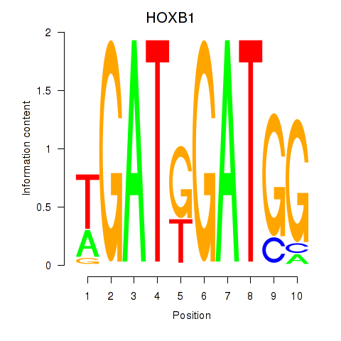
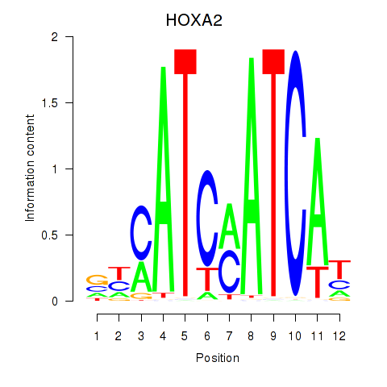

Motif ID: HOXA2_HOXB1
Z-value: 0.451


Transcription factors associated with HOXA2_HOXB1:
| Gene Symbol | Entrez ID | Gene Name |
|---|---|---|
| HOXA2 | ENSG00000105996.5 | HOXA2 |
| HOXB1 | ENSG00000120094.6 | HOXB1 |

![](http://string-db.org/api/image/network?network_flavor=evidence&limit=0&species=9606&caller_identity=MARA&identifiers=9606.ENSP00000365272%0D9606.ENSP00000314480%0D9606.ENSP00000452126%0D9606.ENSP00000356621%0D9606.ENSP00000388684%0D9606.ENSP00000325822%0D9606.ENSP00000240652%0D9606.ENSP00000299295%0D9606.ENSP00000422496%0D9606.ENSP00000308733%0D9606.ENSP00000374135%0D9606.ENSP00000238875%0D9606.ENSP00000303550%0D9606.ENSP00000304350%0D9606.ENSP00000356056%0D9606.ENSP00000289952%0D9606.ENSP00000256509%0D9606.ENSP00000338345%0D9606.ENSP00000368544%0D9606.ENSP00000362244%0D9606.ENSP00000417229%0D9606.ENSP00000296702%0D9606.ENSP00000266058%0D9606.ENSP00000420182%0D9606.ENSP00000352424%0D9606.ENSP00000287641%0D9606.ENSP00000239944%0D9606.ENSP00000252482%0D9606.ENSP00000375067%0D9606.ENSP00000343190%0D9606.ENSP00000349259%0D9606.ENSP00000413445%0D9606.ENSP00000315949%0D9606.ENSP00000346440%0D9606.ENSP00000269095%0D9606.ENSP00000472005%0D9606.ENSP00000273075%0D9606.ENSP00000300006%0D9606.ENSP00000408860%0D9606.ENSP00000384004%0D9606.ENSP00000405722%0D9606.ENSP00000355140%0D9606.ENSP00000258302%0D9606.ENSP00000297537%0D9606.ENSP00000256857%0D9606.ENSP00000367952%0D9606.ENSP00000259371%0D9606.ENSP00000256383%0D9606.ENSP00000288422%0D9606.ENSP00000455444%0D9606.ENSP00000301141%0D9606.ENSP00000330606%0D9606.ENSP00000336721%0D9606.ENSP00000296043%0D9606.ENSP00000359073%0D9606.ENSP00000420502%0D9606.ENSP00000469468%0D9606.ENSP00000278407%0D9606.ENSP00000354586%0D9606.ENSP00000310244%0D9606.ENSP00000364000%0D9606.ENSP00000435509%0D9606.ENSP00000348215%0D9606.ENSP00000269582%0D9606.ENSP00000380460%0D9606.ENSP00000430333%0D9606.ENSP00000301093%0D9606.ENSP00000401932%0D9606.ENSP00000456609%0D9606.ENSP00000302935%0D9606.ENSP00000384703%0D9606.ENSP00000230895%0D9606.ENSP00000412060%0D9606.ENSP00000366330%0D9606.ENSP00000255389%0D9606.ENSP00000385720%0D9606.ENSP00000353151%0D9606.ENSP00000362296%0D9606.ENSP00000381760%0D9606.ENSP00000313007%0D9606.ENSP00000445383%0D9606.ENSP00000300035%0D9606.ENSP00000259455%0D9606.ENSP00000354849%0D9606.ENSP00000359215%0D9606.ENSP00000266546%0D9606.ENSP00000354689%0D9606.ENSP00000253332%0D9606.ENSP00000444972%0D9606.ENSP00000301599%0D9606.ENSP00000320866%0D9606.ENSP00000419457%0D9606.ENSP00000317333%0D9606.ENSP00000346151%0D9606.ENSP00000430497%0D9606.ENSP00000418210%0D9606.ENSP00000308870%0D9606.ENSP00000298699%0D9606.ENSP00000404860%0D9606.ENSP00000387123%0D9606.ENSP00000262032)
{kind=link}
{kind=link}
{kind=link}
Top targets:
Gene overrepresentation in biological_process category:
| Log-likelihood per target | Total log-likelihood | Term | Description |
|---|---|---|---|
| 0.1 | 0.8 | GO:1903756 | positive regulation of dendritic spine maintenance(GO:1902952) regulation of transcription from RNA polymerase II promoter by histone modification(GO:1903756) negative regulation of transcription from RNA polymerase II promoter by histone modification(GO:1903758) |
| 0.1 | 0.3 | GO:1903225 | negative regulation of endodermal cell differentiation(GO:1903225) |
| 0.1 | 0.2 | GO:0021571 | rhombomere 5 development(GO:0021571) |
| 0.0 | 0.2 | GO:0007402 | ganglion mother cell fate determination(GO:0007402) |
| 0.0 | 0.1 | GO:0042418 | epinephrine biosynthetic process(GO:0042418) |
| 0.0 | 0.1 | GO:1903285 | negative regulation of dopamine uptake involved in synaptic transmission(GO:0051585) norepinephrine uptake(GO:0051620) regulation of norepinephrine uptake(GO:0051621) negative regulation of norepinephrine uptake(GO:0051622) negative regulation of catecholamine uptake involved in synaptic transmission(GO:0051945) regulation of glutathione peroxidase activity(GO:1903282) positive regulation of glutathione peroxidase activity(GO:1903284) positive regulation of hydrogen peroxide catabolic process(GO:1903285) positive regulation of peroxidase activity(GO:2000470) |
| 0.0 | 0.1 | GO:0019230 | proprioception(GO:0019230) |
| 0.0 | 0.1 | GO:0061143 | alveolar primary septum development(GO:0061143) |
| 0.0 | 0.1 | GO:0001869 | regulation of complement activation, lectin pathway(GO:0001868) negative regulation of complement activation, lectin pathway(GO:0001869) |
| 0.0 | 0.2 | GO:1990928 | response to amino acid starvation(GO:1990928) |
| 0.0 | 0.1 | GO:0046271 | phenylpropanoid catabolic process(GO:0046271) |
| 0.0 | 0.0 | GO:0021965 | spinal cord ventral commissure morphogenesis(GO:0021965) |
| 0.0 | 0.1 | GO:0019285 | glycine betaine biosynthetic process from choline(GO:0019285) glycine betaine metabolic process(GO:0031455) glycine betaine biosynthetic process(GO:0031456) |
| 0.0 | 0.1 | GO:0002501 | peptide antigen assembly with MHC protein complex(GO:0002501) |
| 0.0 | 0.1 | GO:0036324 | vascular endothelial growth factor receptor-2 signaling pathway(GO:0036324) negative regulation of phosphatidylinositol 3-kinase activity(GO:0043553) |
| 0.0 | 0.1 | GO:0033563 | dorsal/ventral axon guidance(GO:0033563) |
| 0.0 | 0.1 | GO:0008628 | hormone-mediated apoptotic signaling pathway(GO:0008628) |
| 0.0 | 0.1 | GO:1900042 | positive regulation of interleukin-2 secretion(GO:1900042) |
| 0.0 | 0.3 | GO:0051601 | exocyst localization(GO:0051601) |
| 0.0 | 0.2 | GO:2000622 | regulation of nuclear-transcribed mRNA catabolic process, nonsense-mediated decay(GO:2000622) negative regulation of nuclear-transcribed mRNA catabolic process, nonsense-mediated decay(GO:2000623) |
| 0.0 | 0.3 | GO:0048681 | negative regulation of axon regeneration(GO:0048681) |
| 0.0 | 0.3 | GO:2000251 | positive regulation of actin cytoskeleton reorganization(GO:2000251) |
| 0.0 | 0.0 | GO:1903976 | negative regulation of glial cell migration(GO:1903976) |
| 0.0 | 0.1 | GO:0032252 | secretory granule localization(GO:0032252) |
Gene overrepresentation in cellular_component category:
| Log-likelihood per target | Total log-likelihood | Term | Description |
|---|---|---|---|
| 0.1 | 0.3 | GO:0005588 | collagen type V trimer(GO:0005588) |
| 0.0 | 0.1 | GO:1990032 | parallel fiber(GO:1990032) |
| 0.0 | 0.1 | GO:0005850 | eukaryotic translation initiation factor 2 complex(GO:0005850) |
| 0.0 | 0.1 | GO:0042824 | MHC class I peptide loading complex(GO:0042824) |
Gene overrepresentation in molecular_function category:
| Log-likelihood per target | Total log-likelihood | Term | Description |
|---|---|---|---|
| 0.1 | 0.3 | GO:0010698 | acetyltransferase activator activity(GO:0010698) |
| 0.0 | 0.1 | GO:0004603 | phenylethanolamine N-methyltransferase activity(GO:0004603) |
| 0.0 | 0.1 | GO:0000386 | second spliceosomal transesterification activity(GO:0000386) |
| 0.0 | 0.1 | GO:0060961 | phospholipase D inhibitor activity(GO:0060961) |
| 0.0 | 0.1 | GO:0004507 | steroid 11-beta-monooxygenase activity(GO:0004507) corticosterone 18-monooxygenase activity(GO:0047783) |
| 0.0 | 0.1 | GO:0016005 | phospholipase A2 activator activity(GO:0016005) |
| 0.0 | 0.8 | GO:0070577 | lysine-acetylated histone binding(GO:0070577) |
| 0.0 | 0.3 | GO:1990459 | transferrin receptor binding(GO:1990459) |
| 0.0 | 0.1 | GO:0008467 | [heparan sulfate]-glucosamine 3-sulfotransferase 1 activity(GO:0008467) |
| 0.0 | 0.0 | GO:0001160 | transcription termination site sequence-specific DNA binding(GO:0001147) transcription termination site DNA binding(GO:0001160) |
| 0.0 | 0.1 | GO:0035662 | Toll-like receptor 4 binding(GO:0035662) |
| 0.0 | 0.2 | GO:0008494 | translation activator activity(GO:0008494) |
| 0.0 | 0.1 | GO:0001849 | complement component C1q binding(GO:0001849) |
|
|
|
|